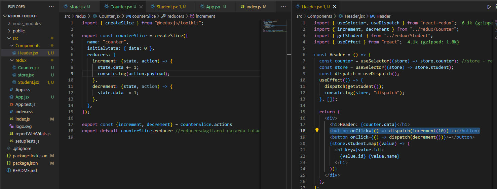

Redux | Redux-toolkit | uzbek | - youtubedan
Ko'd manbai: Link
Provider - Buni ichidagi komponentlarda ma'lumotlardan foydalanish va o'zgartirish mumkin. Ma'lumotlarni
zanjir qilib ulamasdan to'g'ridan to'g'ri ishlatish mumkin
reducers o'zini ichidagi funksiyalarga nisbatan ishlatilinadi
extraReducers - slicerdan tashqaridagi funksiyalarga ishlatilinadi
payload - action.payload. actionga tegishli.
argument 1 tadan ko'p bolsa obyektga yoki massivga yozish kerak yozish kerak. Odatda obyektdan foydalaniladi
dispatch(increment(10)) - dispatch 10ni qabul qiladi
useSelector - ma'lumotni oladi
useDispatch - funksiyalarni ishlatadi
Ma'lumotlarni saqlaydi
slice(ma'lumot va uni o'zgartiruvchi method) yaratadi
Ma'lumotlarni (propslarni) komponentlarga ulab beradi. ichidagi barcha komponentlarga ma'lumotlarni uzatadi, zanjir qilib ma'lumot uzatish ancha qulay
window.__REDUX_DEVTOOLS_EXTENSION__&&window.__REDUX_DEVTOOLS_EXTENSION__()
yarn create next-app .
{kind=link}
{kind=link}
{kind=link}
{kind=link}
{kind=link}
{kind=link}
{kind=link}
{kind=link}
{kind=link}
{kind=link}